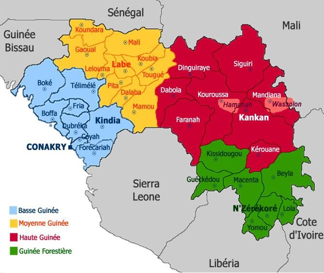
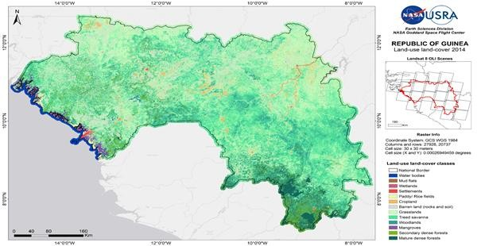
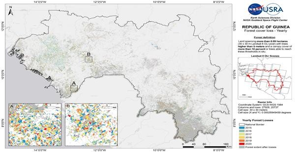
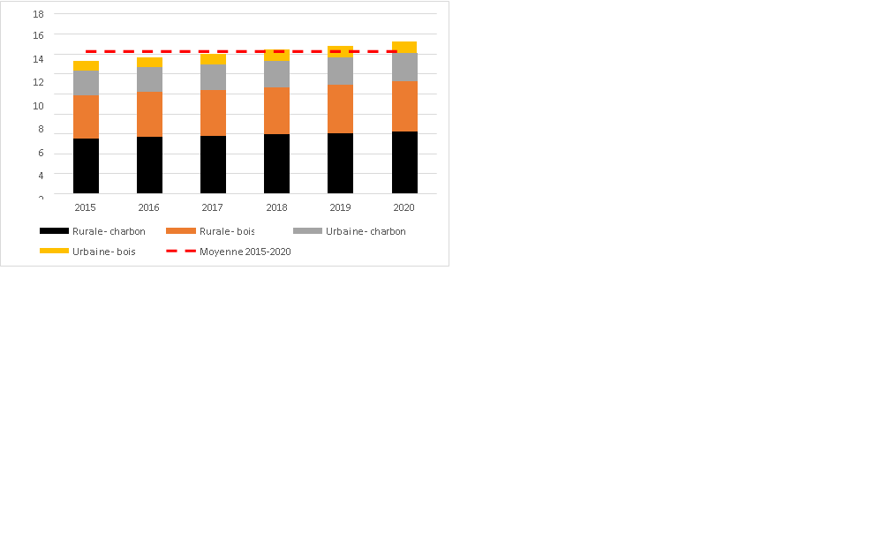
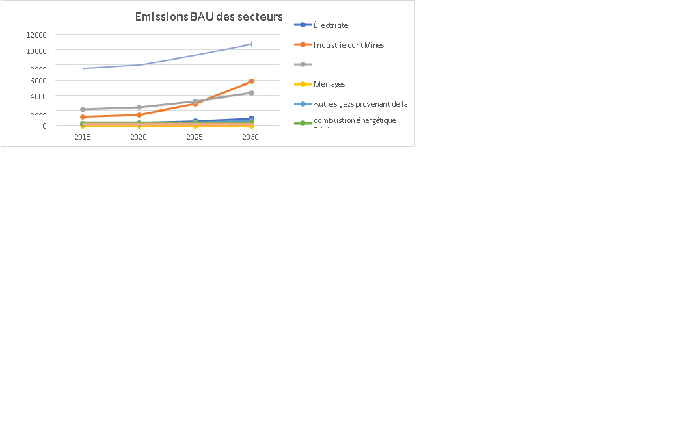
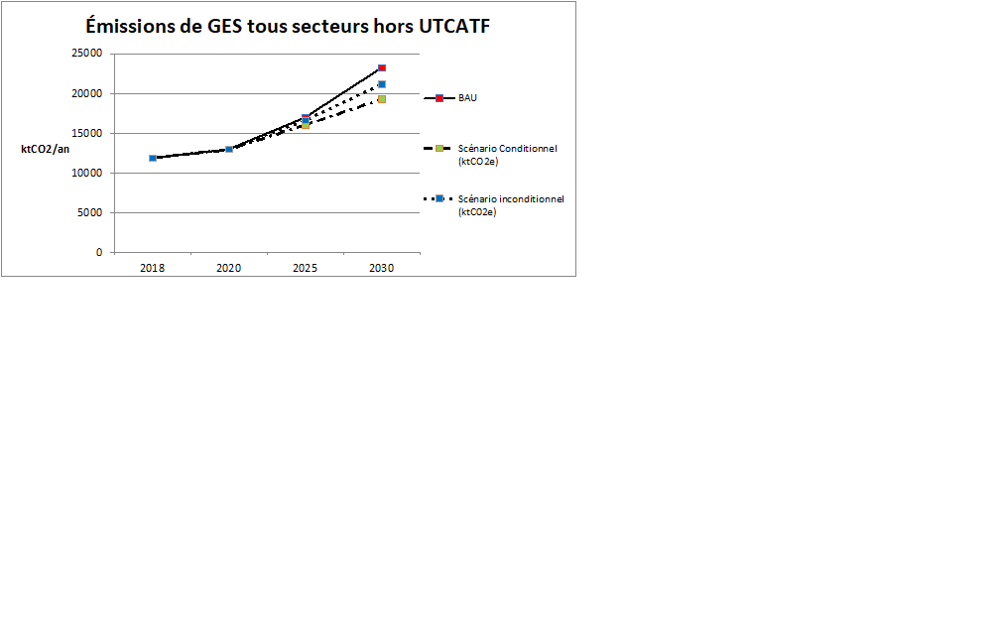
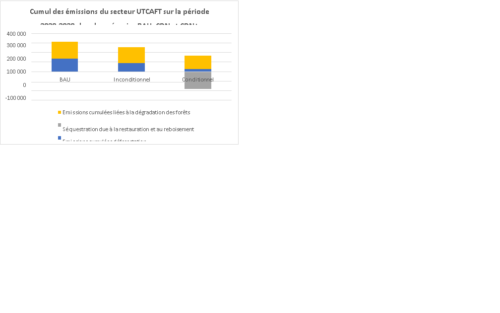

Contribution Determined at the level
National (CDN) of the Republic of Guinea
2021
July 2021
|
AP |
Paris Agreement |
|
BAU |
Business As Usual |
|
BMD |
Multilateral Development Bank |
|
BSD |
Strategy and Development Office |
|
UNFCCC |
United Nations Framework Convention on Climate Change |
|
CDMT |
Medium Term Expenditure Framework |
|
CDN |
Nationally Determined Contribution |
|
ECOWAS |
Economic Community of States West Africa |
|
CEES |
Economic, Environmental and Social Council |
|
CNCC |
National Climate Change Committee |
|
CNI |
Initial National Communication |
|
COP |
Conference of the Parties |
|
INDC |
Planned Contribution Determined at National Level |
|
CS-CDN |
Determined Contribution Monitoring Committee at national level |
|
DNPNCC |
National Directorate of Pollution, Nuisance and Climate Change |
|
EBT |
Assessment of Technological Needs |
|
ELEP |
Light Survey for the Assessment of Poverty |
|
FAO |
United Nations for food and agriculture |
|
IMF |
International Monetary Fund |
|
FNPG |
National Fund for the Promotion of Gender |
|
FONAEF |
National Activity Support Fund Economic Women |
|
GES |
Greenhouse Gas |
|
IWRM |
Integrated Water Resources Management |
|
ICZM |
Integrated Coastal Zone Management |
|
IGES |
Greenhouse Gas Inventory |
|
INS |
National Institute of Statistics |
|
IRENA |
International Renewable Energy Agency |
|
LPDSE |
Development Policy Letter of Energy Sector |
|
MEEF |
Ministry of the Environment, Water and Forests |
|
OECD |
Organization for Cooperation and Economic Development |
|
ODD |
Sustainable Development Goal |
|
PAI |
Annual Investment Program |
|
PANA |
National Adaptation Action Plan |
|
PDL |
Local Development Plan |
|
GDP |
Gross Domestic Product |
|
PMA |
Least Developed Countries |
|
PNA |
National Adaptation Plan |
|
PNCCC |
National Platform for Consultation on Climate Change |
|
PNDES |
National Development Plan Economic and Social |
|
PNE |
National Environmental Policy |
|
UNDP |
United Nations Development Program |
|
PV |
Photovoltaic |
|
RGPH |
General Population and Housing Census |
|
SCN |
Second National Communication |
|
SDAM |
Mangrove Development Master Plan |
|
SE4ALL |
Sustainable Energy for All |
|
SIE |
Energy Information System |
|
SIGPIP |
Integrated Management System Public Investment Program |
|
SNCC |
National Strategy on Climate Change |
|
SNDD |
National Sustainable Development Strategy |
|
TCN |
Third National Communication |
|
EU |
European Union |
|
UNEP |
United Nations Environment Program |
|
LULUCF |
Land Use, Land Use Change and Forestry |
|
WWF |
World Wildlife Fund |
|
Elements of understanding of the 2021 CDN |
|
|
Changes in the CDN compared to 2015 |
The Republic of Guinea has sought to improve the compliance of the mitigation section of its updated NDC with the provisions of the Paris Agreement and the Book of Rules (Decision 4 / CMA / 2018/3 / Add.1) . Are specified, in particular:
|
|
Objective of the document |
Revision of the 2015 NDC in compliance with the provisions of the Paris Agreement and integrating cross-cutting gender / SDG issues. Update of the reference situation using data from the 3rd IGES and a study on the reference level of emissions from the forestry sector. Revision of unconditional and conditional mitigation targets; inclusion of objectives on the LULUCF sector |
|
Situation of the Republic of Guinea |
|
|
National circumstances |
Population 2019 : 12.22 million 1 Share of the agricultural sector in GDP: 24.26% 4 Incidence of poverty: 43.7% in 2019 5 Objective: Go from “Least Developed Country” to “Emerging Country” by 2040 Climate: humid tropical, alternating dry and rainy seasons of unequal duration. Average rainfall: 1988 mm per year Share of Guinea in global GHG emissions: & lt; 0.1% 6 GHG emissions per capita (excluding LULUCF): 1 teqCO2 (2020) |
|
Conditions of implementation |
Implementation of sectoral measures through the National Economic and Social Development Plan (PNDES 2021-2025 under preparation). Piloting of the implementation by the Ministry of Planning and the Ministry of the Environment, Water and Forests, on the guidelines of the National Climate Change Committee and in coordination with the institutional monitoring and evaluation mechanism of the PNDES Operational monitoring of the implementation and evaluation of the progress made in compliance with the provisions of the transparency framework by the National Directorate of Pollution, Nuisance and Climate Change (DNPNCC). The creation of a national agency for the climate, environment and sustainable development is envisaged. |
|
Reference documents |
“Guinea Vision 2040” (2016) National Economic and Social Development Plan (PNDES 2016-2020) National Environment Policy (PNE Edition 2016) National Sustainable Development Strategy (SNDD-2019) National Climate Change Strategy (SNCC-2019) National Water Policy (2018) Codes of the Environment, Water, Livestock, Forestry, Mining Initial National Communication (CNI-2002) National Adaptation Action Plan (PANA-2007) Planned Contribution Determined at National Level (CPDN-2015) 3rd Greenhouse Gas Inventory (2021) Technological Needs Assessment (EBT-2019) |
|
Mitigation component |
|
|
Reference year |
2020, based on updated and projected data from the 3rd greenhouse gas inventory (reference year 2018) |
|
Commitment period |
2020-2030 |
|
GHG taken into account |
CO2, CH4, N2O |
|
Emission sectors covered |
Energy, Industrial processes, Agriculture, Land use, Land use change and forestry, transport, waste |
|
Type of objectives |
Deviation from current practice (BAU) for each of the sectors concerned. Unconditional reduction of emissions compared to a BAU scenario and according to the reference year. Conditional reduction of emissions of emissions compared to a BAU scenario and according to the reference year. |
|
Sectoral objectives |
Energy (electricity production) :
Transport :
Mines :
Waste :
UTCAFT : Biofuels :
Deforestation :
Restoration :
|
|
Estimated level of mitigation |
Excluding LULUCF, the Republic of Guinea sets its unconditional objective (CDN) at 2,056 ktCO2eq / year, i.e. 9.7% reduction in its emissions in 2030 compared to the trend scenario, i.e. an increase in emissions of 5% per year. year over the period 2020-2030. The conditional objective (CDN +) is set at 3,929 ktCO2 eq / year, i.e. 17.0% compared to the trend scenario, i.e. emissions growth of 4% per year over the period 2020-2030. On UTCAFT, excluding reforestation actions (absorptions not taken into account), the Republic of Guinea sets its unconditional objective (CDN) at 20% reduction of its gross emissions in 2030 compared to the trend scenario. The conditional objective (CDN +) stands at 49% compared to the trend scenario. |
|
Costs of implementing commitments |
At least 13.8 billion USD The Republic of Guinea makes part of its contribution (CDN +) conditional on the mobilization of financial resources that can be accounted for under the Financial Mechanism of the Convention. |
|
Adaptation component |
|
|
Manifestations of climate change (horizon 2030) |
Rise in average temperatures Slightly increasing trend in average annual rainfall but marked by increased interannual and intra-annual variability. Rise in sea level and retreat of the coastline |
|
Areas covered |
Water resources / Coastal zone and blue economy / Agriculture, livestock and forestry sector |
|
Estimation of adaptation costs |
Macroeconomic estimate: [713-1922] million USD Estimated measures included in the CDN: 1 billion USD |
|
intention |
The actions taken are said to be “without regrets” |
|
Framework documents for adaptation communication |
National Communications and from 2023, the National Adaptation Plan Transparency reports |
The Republic of Guinea ratified the United Nations Framework Convention on Climate Change (UNFCCC) and the Kyoto Protocol respectively in 1993 and 2005. It has since developed strategies to combat climate change , including its Initial National Communication (CNI), based on a greenhouse gas inventory (IGES) in 2001 (based on 1994 emissions), its Second National Communication (SCN) (based on 2000 emissions). Finally, the Republic of Guinea drew up its National Action Plan for Adaptation to Climate Change (PANA) in 2007 and initiated several projects to implement this plan.
Five years after its adoption in Paris at the COP21 of the United Nations Framework Convention on Climate Change (UNFCCC), the Paris Agreement (PA) on climate became effective in 2020. While science regularly demonstrates the scale of the efforts to be made at the global level to respect the collective commitment, the Republic of Guinea, after having ratified the Paris Agreement on April 22, 2016, intends to reaffirm and strengthen its commitment to contribute to the global response against the threat of climate change through the revision of its NDC submitted in 2015.

Figure SEQ Figure \ * ARABIC1- Natural regions and prefectures of the Republic of Guinea
With an area of 245,857 km², the Republic of Guinea has a population of approximately twelve million inhabitants, or a density of 48 inhabitants per km². It is characterized by four major eco-climatic zones: Lower Guinea, Middle Guinea, Upper Guinea and Forest Guinea. Its hydrographic network is very dense, 1,166 watercourses divided into 23 watersheds, 14 of which are international. It enjoys a humid tropical climate characterized by the alternation of two seasons of unequal lengths: the dry season during which the harmattan blows and the rainy season governed by the West African monsoon. The rainy season lasts 5 to 7 months (April-October) from north to south; there is a national average of 1988 mm of precipitation per year,
With one of the lowest HDIs in the world (178th rank among 189 countries 8 ), the Republic of Guinea must face two major challenges: lifting its population out of poverty and ensuring the country's food security, while its demographic growth is 2.7% per year (INS 2019) and the number of inhabitants is expected to reach 16 million by 2030 (RGPH 2014).
Table 1: Demographic data
|
Indicators |
Data (reference year) |
Sources |
Average ECOWAS |
|
Population |
12.21 million inhabitants (2019) |
INS |
N / A |
|
Population growth rate |
2.7% (2019) |
INS |
2.57 |
|
Density |
51 km² (2018) |
BM |
99.6 |
|
Human Development Index (and rank) |
0.477 (178) |
UNDP (2019) |
0.506 |
|
GINI coefficient on inequalities of income |
33.7 (2012) |
BM |
39.7 |
|
Share of the population below the poverty line (and depth of poverty) |
43.7% (12.5) (2019) |
INS |
N / A |
|
Urbain |
35.4% (9.6) |
||
|
|
64.7% (22.6) |
||
|
Literacy rate |
32% (2014) |
INS |
|
|
Conakry |
62.5% |
||
|
Urbain |
55.4% |
||
|
Rural |
17.6% |
||
|
Life expectancy at birth |
61.1 years (2019) |
BM |
61.3 |
|
Man |
60.5 years (2019) |
59.8 |
|
|
Woman |
61.6 years (2019) |
62.7 |
Despite the double health crisis of 2020 (Ebola and Covid-19), Guinea experienced economic growth of 7% in 2020, according to recent IMF data, driven by the results obtained by the mining sector during the year with a strong global increase in demand for bauxite. Despite the continuous increase in mining exports in 2020 - as in the last five years with a fourfold increase in the tonnages exported for bauxite - revenues from the mining sector, which represent more than a third of public revenue 10 , have not increased, due to falling bauxite prices. Note, however, that growth forecasts for 2021 are less optimistic (5.2%) due to the repercussions of the health crisis on other sectors of the Guinean economy. Real growth should continue to be strong over the next few years (estimated growth in 2022 of 6.1% 11), supported by a robust and continued expansion of the mining sector, if not faster than expected, and consolidated by a gradual recovery of the non-mining economy.
Given these ambitions and the demographic growth, the energy needs of the Republic of Guinea will double in the space of 20 years. However, as the Guinea Vision 2040 prospective document underlines, " this destiny must be accomplished while respecting a protected environment that secures the future of future generations ". The CDN's GHG emission reduction commitments are therefore a reflection of national sectoral strategies and plans already adopted at the national level ( Paris Agreement, Art.4.4 ), but which require urgent mobilization. massive resources for rapid implementation and lasting results.
The CDN preparation process started in November 2019 with the support of UNDP through a workshop largely involving the Ministries, Civil Society and Technical and Financial Partners who validated the principle of a revision process . Under the leadership of the National Directorate of Pollution, Nuisance and Climate Change (DNPNCC) within the Ministry of the Environment, Water and Forests (MEEF) and with the support of the UNDP Climate Promise, the project started in first half of 2020 with on the one hand the realization of an inventory of the implementation of the commitments of the CDN of 2015 with the financial support of the African Development Bank, and on the other hand the mobilization of a team of experts for the revision of the CDN officially launched in July 2020 to comply with the provisions of Decision 1 / CP.21 §24. The health context of Covid-19 strongly constrained the authorities involved with a large part of the workshops and preparatory meetings organized by videoconference. However, in order to ensure broad consultation with national actors, in particular to collect data and to set the course of ambition, the following were organized:
An online survey to " take the pulse of Guinean society on its feelings about climate change, the level of knowledge of the Paris Agreement, the CDN and the opinion on the measures taken ( or to be taken) in the Republic of Guinea on the mitigation and adaptation components. ”;
Seven consultation workshops for the revision of the CDN-Guinea, convened by letter N ° 679 / MEEF / 2020 dated August 20, 2020 in regional capitals were held from August 24 to September 7, 2020. The gauge restrictions on the organization of these workshops was, however, a constraint for a large mobilization of civil society.
The mobilization of a Strategic Orientation Committee including 10 sectoral ministries, including their Gender & Equity focal points, as well as representatives of civil society made it possible to validate the diagnostic report with a view to revising the CDN, the guidance for the construction of scenarios and validation of the provisional NDC, including on the structure of the document in accordance with the provisions of the Rulebook.
The holding of a first national validation workshop on December 11, 2020.
Thanks to the new available data announced for the first half of 2021, and a reaffirmed ambition of the Guinean State, a new revision of the CDN was made with the support of the World Bank and led to the realization of the following last activities:
The holding of a national validation workshop on July 21, 2021 which brought together nearly 80 participants (Ministries, Research Institutes, civil society, private sector and Technical and Financial Partners).
Submission of the CDN validated in the Council of Ministers and information to the National Assembly
Submission to the CDN Provisional Registry administered by the UNFCCC Secretariat.
This consultation process will be repeated during the preparation of the 2nd CDN cycle ( Paris Agreement, Art.4.9 ) with however three developments to come:
An anchor on the institutional architecture for the implementation and monitoring of the CDN in the process of development and which will be consolidated through the worksite in terms of partnership and investment;
Wider participation of civil society and the private sector, particularly in the diagnostic phase on the level of achievement of commitments.
Taking into account the results of the overall assessment, in accordance with article 4, §9, of the PA, in order to present the highest possible level of ambition during the next CDN cycles.
The sectoral commitments made under the CDN will be implemented through the National Economic and Social Development Plan (PNDES) 2021-2025 and 2026-2030, the main planning tool of the Republic of Guinea, under the leadership of the Ministry of Planning and in close collaboration with the Ministry of the Environment, Water and Forests. As part of the NDC Partnership and with the support of the World Bank, an investment plan for actions taken under the CDN is being drawn up, taking into account the investments planned for the national budget and the budget of the communities. territorial (unconditional commitments), and will be accompanied by a partnership plan intended to mobilize financial partners and the private sector (conditional budget). The cross-cutting measures to support the implementation and compliance with the transparency framework of the Paris Agreement will be subject to specific budgetary management by the Ministry of the Environment, Water and forests; the support of technical and financial partners for the application of these transversal measures, including the implementation of the evolution of the target institutional architecture is requested.
The Republic of Guinea, as a member of the Economic Community of West African States (ECOWAS), applies community directives and regulations in the areas targeted by its NDC (shared water resources, access to energy services, increased regional agricultural productivity, etc.). It also participates in the initiatives underway within the ECOWAS Commission to help harmonize the framework for monitoring climate finance flows in the regional space, for better comparability and enhanced climate action. To date, however, the Republic of Guinea sets its level of effort in application of article 4, §2, of the Paris Agreement, independently and not in concert with the other member states (article 4, § 16-18, of the Paris Agreement).
When the first NDC was established in 2015, no specific guidelines or rules had been issued to harmonize the commitments of the country Parties and thus make them comparable. Like other countries, the Republic of Guinea has therefore made certain choices in terms of content and format. The provisions of the Book of Rules, adopted at COP24 and COP25 will only apply in 2024, for the second cycle of NDC, but countries are invited to take into account, as far as possible, these provisions from the start. 'update of their CDN in 2020 ( Decision 4 / CMA.1 §7 ). For the NDC revised in 2021, the Republic of Guinea wishes to start approaching the provisions that will become mandatory from 2024, intended to strengthen the transparency and confidence of the Parties. Thus, the Republic of Guinea has sought to improve the compliance of the mitigation section of its updated NDC with the provisions of the Paris Agreement and the Book of Rules ( Decision 4 / CMA / 2018/3 / Add. 1) ). To do this, the updated CDN specifies, in particular:
Quantifiable information on the benchmark of the target (s), including a baseline year.
Timelines and / or implementation periods, scope and coverage, planning processes.
The assumptions and methodological approaches used, in particular to estimate and account for GHG emissions.
Explanations of how the NDC is fair and ambitious, and how it contributes to the 2 ° C target.
Better documentation of the data making it possible to establish the baseline situation in terms of GHG emissions and the assumptions made for the construction of the scenarios.
The definition of sectoral indicators and quantified targets for all the commitments made.
As an LDC, major challenges remain significant for the Republic of Guinea in order to apply all the provisions provided for ( Decision 1 / CP.21, § 31 ). This concerns in particular the baseline situation of the LULUCF sector with the urgent need to carry out a new forest inventory to accurately assess the current sequestration capacity of Guinean forests, but also to carry out an in-depth study of the vectors of deforestation. To this end, the Republic of Guinea requires the support of the international community to strengthen its capacities ( Paris Agreement, Art.11.3 ).
The Republic of Guinea is committed to a continuous improvement of its transparency framework, so as to be able to write its first biennial report on transparency and its national inventory report, at the latest by December 31, 2024 ( Decision 18 / CMA.1 §3 ). Several major advances have been made in recent years and are already making it possible to better structure the transparency framework of the Republic of Guinea, in particular thanks to the results of the Statistical Law of 2014 and the regular publication of statistical yearbooks edited by the National Institute of Statistics . More recently, 2020 is marked by the start of the Integrated Management System for the Public Investment Program (SIGPIP) which should address the weaknesses highlighted by several audits of the monitoring and evaluation of public investments, including in the fight against climate change. . Finally, the Republic of Guinea is currently leading, as part of the development of its TCN, a process of improving the IGES system and the skills of the team in charge; This improvement is also accompanied in 2020 by the emergence of a network of climate focal points / climate referents within the sectoral ministries whose mandate is, among other things, to help collect data with a view to carrying out inventories of GES.
Strengthening the system for producing and updating national GHG inventories;
The overhaul of the institutional framework for steering, implementing and monitoring climate action and the commitments made under the CDN;
The establishment of a legal framework on the climate to make this mechanism more robust and better coordinated;
Consolidation and strengthening of the ex post monitoring and evaluation system for commitments made under the NDC: the revised 2021 NDC includes specific indicators and targets for each commitment. However, to date, there is not yet a robust and centralized monitoring and evaluation system for the CDN of the Republic of Guinea and it remains to be built, by backing it up with the monitoring of the implementation of the PNDES.
Establishment of the mechanism for monitoring the support received under the NDC (Section I of Part VI of the Annex to Decision 18 / CMA.1): major effort to define the nature ongoing funding, referencing in the information and budget management and coordination systems must be carried out so that the Republic of Guinea is able to meet these obligations.
The alignment of public policies on climate action, and the transversal integration of the objectives of the CDN into all the public policies and sectoral strategies concerned.
With a gender index of 0.439 (SIGI Index OCDE), Guinea is among the 8 countries (78 out of 86) with the greatest disparities between women and men in the non-OECD space. According to the World Bank 12 , reducing gender inequalities in the Republic of Guinea could potentially accelerate the growth of GDP per capita by 0.6 percentage point per year or 10.2% in total by 2035. Beyond the fact that this increase in GDP is likely to strengthen capacities in general adaptation, gender mainstreaming in the adaptation and mitigation measures of the NDC is a priority given the tasks generally assigned to women in the household, their over-representation in the sectors most affected by climate change (agriculture, livestock and fisheries) but also their low representation in decision-making bodies. This priority is also underlined in the PNDES (2016-2020).
The mitigation and adaptation measures of the CDN are all likely to improve the adaptation capacities and resilience of women and vulnerable populations in Guinea as a priority. To target these groups as a priority, four transversal actions are priorities: (i) providing sufficient operating resources for the “Gender and Equity” services created in 2015 in all the ministries 13 , (ii) the integration of adaptation and mitigation issues into the resources dedicated to the National Fund to Support Women's Economic Activities (FONAEF ) and the National Fund for the Promotion of Gender (FNPG),
In addition, gender-specific monitoring, outcome and impact indicators are explicitly mentioned in the adaptation and mitigation measures of the CDN and aim to promote strong gender mainstreaming in planning. public policies, and draw the necessary conclusions about their possible differentiated effects. The impact indicators measure both the standard of living (prevalence of poverty, rate of malnutrition) and the quality of life (access to water and sanitation infrastructure) of women. The monitoring and results indicators aim to strengthen their autonomy and their place in decision-making bodies (improvement of skills, training in income-generating activities,
The reference year for CDN 2021 is 2018, the basis of the 3rd greenhouse gas inventory (IGES) carried out in 2021 for the publication of the Third National Communication (TCN). The sectors taken into account in the 3rd IGES are as follows: energy, waste, agriculture, industries including mining, households and transport. To estimate emissions from the LULUCF sector, the Forest Emission Reference Level (FREL) was calculated.
Table 2: National emissions of the Republic of Guinea in kTCO2eq LULUCF according to the 3rd IGES and the NERF
|
National emissions of the Republic of Guinea in ktCO2eq according to the 3rd IGES and the NERF |
||
|
Sector |
Emissions in 2018 in ktCO2 (TCN) |
Emissions in 2020 in KtCO2 (TCN) |
|
Energy |
3,863 |
4475 |
|
- Electricity |
295 |
357 |
|
- Industry including mining |
1 192 |
1,441 |
|
- Transport |
2 155 |
2 421 |
|
- Households |
4 |
5 |
|
- Other gases from energy combustion |
217 |
251 |
|
Waste |
298 |
317 |
|
Agriculture |
7,537 |
7 996 |
|
Industrial processes |
136 |
153 |
|
Total (without LULUC) |
11 834 |
12 940 |
|
Sector |
Gross emissions tCO2eq / year (NERF, 2020) |
|
|
UTCAFT (biofuels included, absorption excluded) |
- |
33 587 |
|
Total (with UTCAFT) |
46 527 |
|
The energy sector accounts for emissions related to the following sectors: electricity production, industries including mining, transport, households and other gases from energy combustion. The emissions figures come from the 3rd IGES: in 2018, emissions related to the energy sector were 3,863 ktCO2 eq; according to projections, the sector's 2020 emissions amount to 4,475 ktCO2 eq
The energy consumption profile thus shows the growing share of fossil fuels in the energy mix. The growth in the consumption of fossil fuels is faster due to the growth observed in certain sectors, notably road transport and industrial and mining processes.
Electricity production
In 2018, 45% of Guinean households had access to electricity 14. It should be noted that the rate of access to electricity in 2013 was only 18.1%, which reflects a recent sharp increase thanks to the commissioning of the Kaléta dam (2015). This progress should further accelerate significantly with the recent commissioning of the Souapiti dam, whose capacity of 450 megawatts (MW) will ultimately almost double the installed electrical power. The disparities between urban and rural areas are very strong: in rural areas (two thirds of the country's population) only 22.8% of households have access to electricity against 86.7% in urban areas. The mining sector is the main industrial source of demand for electricity. Guinea has a significant hydroelectric potential estimated at more than 6,000 MW (of which around 12% is currently exploited) as well as a significant solar potential (4.8 Kwhm² / day).
The authorities intend to realize this potential through the PNDES (2021-2025), the Energy Sector Development Policy Letter (LPDSE), the General Policy Declaration and the 2009-2025 Action Plan. In this regard, the strategic option of the PNDES is to contribute to the promotion of a model of sustainable energy development, based essentially on social and regional equity, renewable energies and environmental control of production and energy consumption.
Translated in terms of priorities, this strategic option involves (i) the rehabilitation of the production and distribution apparatus of the electricity sub-sector, (ii) the reform of its institutional framework, (iii ) mobilization of Guinean hydroelectric potential, in particular large and micro / mini power plants, (iv) promotion of "decentralized" solutions involving local communities and the private sector at the rural level, (v) promotion of solutions for the preservation of natural resources, (vi) recourse to innovative techniques such as biogas digesters (DAB), (vii) meeting the needs of rural and peri-urban areas for the implementation of a program of access to energy services,in accordance with the objectives of the Renewable Energy Policy (PERC) and the ECOWAS Energy Efficiency Policy (PEEC).
The PNDES therefore provides for: (i) the construction of several large hydroelectric projects; (ii) the continuation and completion of the institutional structural reforms initiated in the sector both at the central and decentralized levels (including the establishment of an appropriate legal and regulatory framework and restoration of the financial equilibrium of the EDG) ; (iii) electrification of rural localities; (iv) network extensions in peri-urban areas; (iv) diversification of energy sources by favoring renewable energies, in particular micro hydroelectric power stations, solar and wind energy, biomass and domestic fuels; (v) participation in the process of interconnection of sub-regional electricity networks.
Industrial processes
Despite a difficult international economic situation, the reforms undertaken have allowed a resumption of investment in the bauxite and gold sector. The bauxite region of north-west Boké is in an unprecedented development dynamic. Global investments in mining projects could reach 50 billion USD in the next decade.
In three years, bauxite production has thus increased from 20.2 million tonnes (Mt) in 2014 to 87.7 Mt in 2020, an increase of 334% over the period 16 . The production outlook for the coming years follows the same trend. According to a CM Group study in 2018, by 2023, Guinea would supply 32% of world bauxite production (compared to around 16% in 2018).
The 2019 Sustainably Growing Guinea's Bauxite-Aluminum Industry report estimates that CO2 emissions could soar with the growth of the sector and the development of refinery activities. In fact, the production of one tonne of aluminum can emit from 1.7 tonnes to 23 tonnes of CO2 depending on the energy used during the processes, in particular during the smelting of aluminum 17 . The development of alumina refinement and aluminum smelting are therefore likely to very strongly increase the country's electricity demand and CO2 emissions if the capacities are not installed through renewable energies.
In addition, the Republic of Guinea has the world's largest untapped iron reserves, estimated at over 20 billion tonnes and of exceptional quality (iron content over 60%). The Simandou 1 & 2 lots were awarded in November 2020 to the SMB Winning consortium with signature of the conventions and ratifications by the parliament. This reallocation makes it possible over the period 2020-2030 to put this gigantic mining potential into operation.
The mine development program 18 foresees bauxite production by 2030 up to 150 million tonnes per year (MTPA), and the upgrading of iron deposits for around 140 MTPA.
The activity of mining sites could thus emit around 5,880 kTCO2 per year in 2030 in the BAU scenario 19 , broadcasts to which will be added:
transport from mines to ports, mainly by rail in 2030,
port operations,
bunker fuels
bauxite processing units for 500,000 T per year of alumina.
The fourth pillar of the Mining Sector Development Program (PDSM) aims to preserve the natural capital affected by the mining sector through the following specific objectives: (i) clean technologies in the established mining industry, (ii ) protection of biological diversity in mining areas increased, (iii) systematic disaster risk assessment / management. It therefore does not include a climate change mitigation strategy or emission reduction targets. The strong growth of the sector, which exceeds the scenarios envisaged in 2015, therefore requires a consultation process with stakeholders to promote sustainable development.
Transport
The data of the transport sector have been updated through the 3rd IGES. This sub-sector is the main source of fossil fuel consumption in Guinea, generating emissions of 2,155 ktCO2eq in 2018. Regarding infrastructure and services for other modes of transport, the PNDES is based on a multimodal approach to the development of transport, integrated into the sphere of agricultural production and mining. In particular, several rail line rehabilitation and construction projects have been identified and financed by the private sector; these are in particular:
- The “Trans-Guinean” of about 650 km at a cost of 5.5 billion USD, connecting the Simandou mine to the future deep-water port of Matakang with a capacity of 80 MT per year (MTPA); built by SMB-Winning;
Mount Nimba - Liberia, 50 km, from 2025, by SMFG;
Dapilon to Santou, 112 km, in 2022 by SMB;
Télimélé in Boffa, 120 km, in 2025, by TBEA;
Gaoual in Kamsar, 120 km, by Alliance Mining Promoted (feasibility study, for commissioning before 2030);
Mamou at Port de Benty, 270 km, by Anglo-AfricanMinerals (commissioned before 2030).
These railway lines represent a potential of 151 MT.km / day of minerals transported in 2025 and 193 MT.km / day in 2030.
The Urban Travel Plan (PDU) of Conakry also provides in its privileged integrated scenario the development of:
A BRT Le Prince Kaloum / Sonfonya line by 33.5km cornice.
A 33.5 km HRT Kaloum / Kagbelen line.
This work is estimated at a cost of 422 million euros by 2030 for a cumulative mitigation assessment of -919 ktC02eq by 2030.
The 3rd IGES estimates emissions from the agricultural sector at 7,537 ktCO2 eq in 2018 (i.e. around 63% of the total excluding LULUCF). It should be mentioned that the emissions due to burning are considerable and represent the first source of deforestation but are counted in the LULUCF sector. The following table shows the emissions of the agricultural sector, all GHGs combined, according to the emitting practices. The main emission vector is livestock for 71.5% (due to the different management methods of excreta and enteric fermentation)
Table 3: Average emissions from the agricultural sector over the period in 2018 and 2020, all GHGs combined in kTCO2eq (Source: 3rd IGES)
|
Transmitting station |
Average emissions level in 2018 (3rd IGES) in kTCO2eq |
Share of emissions / total agricultural sector |
Level emissions on average in 2020 in kTCO2eq |
Share of emissions / total agricultural sector |
|
Enteric fermentation |
5 215 |
69.2% |
5 532 |
69.2% |
|
Manure management |
172 |
2.3% |
182 |
2.3% |
|
Rice cultivation |
0 |
0% |
0 |
0% |
|
N2O from agricultural soils |
2 105 |
27.9% |
2,233 |
27.9% |
|
Burning of residues agricultural |
43 |
0.6% |
46 |
0.6% |
|
Total |
7,535 |
100% |
7 993 |
100% |
In the absence of precise data, emissions due to rice cultivation have not been assessed in the TCN but deserve to be studied in a specific way because they represent an interesting mitigation potential thanks to the improvement of practical.
Over the period 2013-2018, the cultivated areas of the main food sectors grew by around 4% per year on average, reaching 4.4 Mha in 2018 20 . Livestock has also experienced growth of more than 5% per year, all herds combined. The assumption is that agricultural emissions will continue to grow by 6% per year on average. In 2020, based on the 2018 base year, emissions are estimated at 7,993 kTCO2eq.
Clear strategic orientations should be proposed in the next CDNs in order to accelerate the transition to slash-and-burn agriculture, controlled rice cultivation, and efficient use of agricultural residues. However, no quantified commitment appears on this sector in the 2021 NDC, given the country's priority food security issues. A more precise inventory of the sector's emissions and the evaluation and prioritization of potential mitigation measures is a priority to anticipate the country's next commitments for this strategic and high-emitting sector.
Emissions related to the waste sector are 298 ktCO2eq in 2018 with a growth of 3% by 2030.
So far solid waste has not been treated in the country, including in the largest cities, generating a significant shortfall in terms of health, the environment and the economy.
A large-scale project is however under study to collect the waste from Conakry and recover it in the form of electricity from the combustion of methane. This project provides for the collection of 1,740 ktons of cumulative treated waste by 2025 and 4,148 ktons cumulative by 2030. This would prevent around 110 kt CO2eq / year by 2030, and an accumulation of more than 900 kt CO2eq d 'here there (Bilan Carbone of the project).
Emissions linked to deforestation, degradation and forest management were estimated using an approach and methods consistent with the establishment of Forest Emission Reference Level (FREL) within the framework of the UNFCCC REDD + program. The FREL was carried out in 2021 and validated at the national level to specify the emissions from the LULUCF sector, for which national data remains very incomplete. The realization of a complete forest inventory remains a major priority of the country to assess the precise state of Guinean forests and the factors of deforestation in order to build a comprehensive strategy of protection and restoration, taking into account the fact that the national forest inventory is very old (1988). In particular, adapted and localized strategies must be developed for all the factors of deforestation, including primarily slash-and-burn agriculture or natural bush fires. Given the richness of Guinean forests in terms of biodiversity, it might be appropriate to integrate the monitoring of habitats and fauna present in the forest into a National Forest and Wildlife Inventory
The equations used for estimating emissions from deforestation, degradation and sustainable forest management were taken from Volume 4, Chapter 2 of the IPCC Guidelines (2006) and its Supplement (2019) . The “ Methods and Guidance Document (MGD)” of the “Global Forest Observations Initiative” have also been used to implement the previously cited guidelines.
The LULUCF sector brings together the following REDD + activities: deforestation, forest degradation, forest management. For each of these activities, the emissions were calculated. These emissions and the methodologies used to calculate them are detailed below:
- Land use change and calculation of emissions linked to deforestation
Activity data, relating to land use change between 2015 and 2020, were produced using a land use change map.
Based on the 2014 land use map produced by NASA Goddard Space Center, the annual forest loss was mapped for the period 2015 to 2020 using a disturbance algorithm based on the NDVI and other disturbance indices available on Google Earth Engine.

Figure 1: 2014 land use map for the Republic of Guinea
The land use change map was then obtained and shows the loss of forests from 2015 to 2020 as well as the remaining forest land in 2020.

Figure 2: Stratification map - Forest loss between 2015 and 2020 for the Republic of Guinea
Based on the forest cover change map, the annual forest losses in Guinea between 2015 and 2020 were calculated and presented in the following table:
Table 4 - Forest situation over the period 2015-2020 (NERF 2021)
|
Forest class |
Situation 2014 (ha) |
Losses over the period 2015-2020 (ha) |
Remaining 2020 (ha) |
Deforestation rate |
|
Light forest |
2 744 272 |
689 957 |
2 054 315 |
-0.05 |
|
Secondary forest |
778 128 |
498 903 |
279 226 |
-0.16 |
|
Dense humid forest |
868 878 |
83 380 |
785 499 |
-0.02 |
|
Mangrove forest |
217 131 |
9 072 |
208 058 |
-0.01 |
|
TOTAL |
4,608,409 |
1 281 312 |
3 327 097 |
-0.053 |
It is the open forests and secondary forests that have been the most affected by deforestation over the period with deforestation rates of 5% and 16% respectively and deforested areas of around 700 kha and 500 kha.
By combining the previous observations with the known emission factors for deforestation, it was possible to calculate the emissions related to deforestation (in MtCo2 / year). These emissions amount to 17,041 kTCO2 / year on average over the period, or a total of 102,249 ktCO2 in [2015-2020].
Table 5: Emissions linked to deforestation (in KtCO2 eq / year)
|
Deforestation in… |
Average annual |
|
Tree and wooded savannah |
277 853 |
|
Clear forest |
7,527,569 |
|
Secondary forest |
4 270 629 |
|
Dense humid forest |
2 963 338 |
|
Mangrove forest |
2 002 256 |
|
Average |
17 041 646 |
- Forest degradation - methodology and calculation of emissions
In Guinea, the main cause of emissions from forest degradation is the consumption of fuelwood, which includes fuelwood and charcoal.
The calculation of emissions from fuelwood is based on census data and studies that analyzed and quantified the consumption of fuelwood and charcoal for rural and urban areas (INS 2014, PANEB 1999) ). In addition, since fuelwood consumption is directly related to the size and growth of the population, the demographic model of the National Statistics Institute was used to take into account the growth of the population and the increase. subsequent broadcasts.
Table 6: Consumption of charcoal and wood in rural and urban areas in tonnes of dry matter per year
|
Year |
Consumption in rural areas |
Consumption in urban areas |
||
|
Coal |
Wood |
Coal |
Wood |
|
|
2015 |
5 519 |
4 371 |
2410 |
994 |
|
2016 |
5 678 |
4,497 |
2,479 |
1,023 |
|
2017 |
5 816 |
4,607 |
2,570 |
1 06 |
|
2018 |
5 956 |
4 718 |
2,663 |
1,099 |
|
2019 |
6,097 |
4 830 |
2 759 |
1 138 |
|
2020 |
6 268 |
4 965 |
2,836 |
1 170 |

Figure 3 - Emissions due to fuelwood consumption over the 2015-2020 period in Guinea
The National Climate Change Strategy provides for the introduction of at least 1 million improved stoves by 2030 and the deployment of butane gas, and “assumes that this action will halve the amount of firewood extracted from the forest ”(SNCC, 2019). Urgent actions to implement this goal are needed and are included in the NDC.
- Sustainable forest management - methodology and calculation of emissions
The average annual volume operated between 2015 and 2020 amounts to 41,767 m³. These statistics form the basis for calculating emissions from industrial logging.
However, commercial timber harvesting is only one source of emissions from industrial logging. The other sources are:
Road construction and log yards
Destruction of biomass due to skidding
Damage to the residual forest stand during felling.
The annual emissions due to industrial logging in Guinea are between 328 and ktCO2 / year and 342 ktCO2 / year over the period 201 (-2020.
Summary: The Forest Reference Emission Level (FREL) is estimated at 33,587 ktCO2eq per year. Of this total, 57% are linked to deforestation, 42% to fuelwood consumption (degradation) and 1% to industrial logging (forest management).
Table 7: Summary of emissions related to the LULUCF sector
|
REDD + activity |
Emissions [ktCO2eq / year] |
|
Deforestation |
18 995 |
|
Degradation - energy wood |
14 254 |
|
Forest management - industrial logging |
337 |
|
NERF |
33 587 |
As part of its participation in the 21st Conference of the Parties (COP) in Paris in 2015, the Republic of Guinea presented to the international community its Planned Nationally Determined Contribution (INDC) ( Lima Appeal for Climate Action §9 ) and identified the priority mitigation measures to be implemented in the energy sector, and in particular the production of electricity, forestry, and the extractive industries ( Paris Agreement, Art.4 ). The Republic of Guinea's GHG emissions levels are very low (1 ton of CO2 per year per capita excluding LULUCF), compared to a global average level. The development issue therefore remains a priority in order to meet the essential needs of the Guinean population. Nevertheless,
Thus, in order to participate in the achievement of the overall objective defined in Article 2 of the Paris Agreement, it is possible for the Republic of Guinea to reconcile economic growth and a low-emission development trajectory of carbon, and above all to avoid being “trapped” for decades by carbon-intensive infrastructure, particularly energy infrastructure. These efforts to limit the growth of GHG emissions, on the consumption of biomass-energy in particular, are also likely to generate co-benefits in terms of adaptation to climate change and thus participate in the implementation of the Paris Agreement ( Art.4 - §7 ). These efforts were built in line with the most recent prospective vision and planning documents: Guinea Vision 2040, National Strategy on Climate Change (SNCC, 2019), National Sustainable Development Strategy (SNDD 2019), National Development Plan Economic and Social (PNDES 2016-2020), National Response Plan against Covid-19. The revision of the CDN was also carried out by ensuring better gender integration in the CDN, both in the sectors and actions covered, and in the coordination and monitoring modalities.
National Response Plan against Covid-19. The revision of the CDN was also carried out by ensuring better gender integration in the CDN, both in the sectors and actions covered, and in the coordination and monitoring modalities. National Response Plan against Covid-19. The revision of the CDN was also carried out by ensuring better gender integration in the CDN, both in the sectors and actions covered, and in the coordination and monitoring modalities.|
Sector (IPCC nomenclature) |
Covered gases |
|
Energy |
CO2, CH4, N2O |
|
Agriculture |
CO2, CH4, N2O |
|
Waste & industrial processes |
CO2, CH4 |
|
UTCAFT |
CO2 |
It was decided to base the baseline situation of this 2021 CDN on the data and projections from the 3rd IGES and the NERF, making it possible to build more robust ambition scenarios. These new data available make it possible to consolidate and strengthen the commitments made in 2015.
The emissions growth projections based on the 3rd IGES were obtained using the Greenhouse Gas Abatement Cost Model (GACMO) tool. This tool makes it possible to calculate and monitor the reduction of Greenhouse Gases (GHGs) in the following sectors: energy, waste, agriculture, industrial processes.
For the LULUCF sector, the emission scenarios were developed on the basis of NERF 2020 data.
In view of its LDC status and the importance of its development needs, the Republic of Guinea sets relative targets for reducing greenhouse gas emissions in 2030 compared to the baseline trend scenario.
The trend scenario (known as “Business-as-usual”) is built on the basis of the following assumptions, from the reference year 2020, pursuing emissions growth of 6% per year over the period 2020- 2030.
Table 8: Annual growth assumptions in GHG emissions for the construction of the BAU 2030 trend scenario
|
Sector |
Business as usual (BAU) assumptions |
Sources |
|
Electricity production |
Electricity production growth: + 15% / year over 2020-2030 to ensure domestic growth and industrial connection and + 5% / year over 2030-2050. |
CDN 2020 SIE Guinea |
|
Transport |
Conservative assumption: 100k vehicles imported per year (100k in 2017, 130k in 2018); 50% diesel and 50% gasoline. No railway lines or development of urban public transport |
ECOWAS standard Conakry urban displacement plan |
|
Mines |
Increase in production + 15% / year over 2020-2030 and + 5% / year over 2030-2050 |
|
|
Waste |
Waste + 3% year |
Feasibility study for the downstream structuring of the waste management sector in Conakry Guinea (AFD, 2021) |
|
Agriculture |
+ 6% per year |
3rd IGES |
|
UTCAFT |
Deforestation of -5.3% per year over the period 2015-2020 Area of 3,424,543 hectares in 2020 excluding wooded savannah (NERF 2021) |
NERF 2021 Biodiversity strategy 2016-2020 |
|
Wood energy |
Demand growth according to demographic growth of + 2.7% |
INS |

Figure 4: Growth trajectory of GHG emissions by sector in the trend scenario excluding LULUCF
Objectives of the NDC
The contribution provides for a relative reduction in GHG emissions by 2030 in various sectors of the economy compared to the emissions projected according to the trend scenario (BAU). It consists of an unconditional contribution (CDN) and a conditional contribution (CDN +). Taking into account the different methodologies used to establish the baseline between the LULUCF sector and the other sectors, the commitments are treated separately.
Table 9: GHG emissions projected by sector in 2030 according to the BAU, CDN and CDN + scenarios (in kTCO2eq) excluding LULUCTS
|
Subdivision sectoral |
BAU scenario |
CDN Unconditional |
CDN + Conditional |
|||
|
Years |
2 018 |
2,020 |
2 025 |
2,030 |
2,030 |
2,030 |
|
Electricity |
295 |
357 |
575 |
926 |
905 |
693 |
|
Industry of which Mines |
1 192 |
1,441 |
2,890 |
5,800 |
4 060 |
2,900 |
|
Transport |
2 155 |
2 421 |
3240 |
4 335 |
4,142 |
3,879 |
|
Households (excluding biofuels) |
4 |
5 |
6 |
8 |
8 |
8 |
|
Other gases from combustion energy |
217 |
251 |
398 |
657 |
590 |
486 |
|
Waste |
298 |
317 |
367 |
425 |
392 |
258 |
|
Agriculture |
7,537 |
7 996 |
9,271 |
10 748 |
10 748 |
10 748 |
|
Process industrial |
136 |
153 |
205 |
274 |
274 |
274 |
|
TOTAL |
11,834 |
12,940 |
16,951 |
23.175 |
21,119 |
19,246 |
The Republic of Guinea sets its unconditional objective (CDN) at 2,056 ktCO2eq / year, i.e. 9.7% reduction in its emissions in 2030 compared to the trend scenario, i.e. an increase in emissions of 5% per year over the period 2020-2030. The conditional objective (CDN +) is set at 3,929 ktCO2 eq / year, i.e. 17.0% compared to the trend scenario, i.e. emissions growth of 4% per year over the period 2020-2030.

Figure 5: GHG emissions in all sectors excluding LULUCF, BAU, CDN and CDN + scenarios
The growth scenarios of GHG emissions for the LULUCF sector and the mitigation measures are based on the baseline data of FREL 2021 and their projections, on the national forest investment plan, on the national biodiversity strategy 2016 -2025, and on sectoral policy documents on wood energy and fuel substitution.
Table 10: Deforestation rate and deforested area according to the BAU, CDN and CDN + scenarios (kteqCO2) according to NERF 2021
|
Type of forest |
Surface in hectares (2020) |
Percentage |
Deforestation rate (2020-2030) |
|
Clear forest |
2 054 315 |
62% |
-5% |
|
Secondary forest |
279 226 |
8% |
-16% |
|
Dense humid forest |
785 499 |
24% |
-2% |
|
Mangrove forest |
208 058 |
6% |
-1% |
|
Total area |
3 327 097 |
100% |
- |
|
BAU scenario (2030) |
CDN 2030 scenario Unconditional commitments |
CDN + 2030 scenario Conditional commitments |
|
|
Deforested areas in ha by 2030 |
1 150 950 |
742 058 |
217 111 |
Table 11: Projected GHG emissions by sector cumulated by 2030 according to the BAU, CDN and CDN + scenarios (in kTCO2eq) for the entire LULUCF sector (deforestation, reforestation, degradation)
|
Emission sector |
BAU scenario (2030) |
CDN 2030 commitments scenario unconditional |
CDN + 2030 contingent liabilities scenario |
|
Deforestation cumulative by 2030 (NERF 2021) |
137 025 |
88 345 |
25 408 |
|
Reforestation cumulative by 2030 (EX-ACT) |
0 |
-4 514 |
-180 565 |
|
Degradation cumulative by 2030 with or without the dissemination of improved stoves |
177 151 |
167 018 |
143 501 |
|
Butane gas replacing wood (GACMO) |
0 |
-1 417 |
-1 417 |
|
Cumulated reduction compared to BAU scenario by 2030 |
- |
-64 695 |
-327 138 |
Thus, for the UTCAFT sector, we observe:
According to the BAU scenario (2030), a gross emission of 314,175 kteqCO2 for the sector is split between deforestation and degradation;
According to the CDN scenario, a gross emission of 255,480 kteqCO2 on deforestation and degradation as well as a sequestration potential of 4,514 kteqCO2 for reforestation and reduction of 1,417 kteqCO2 for butane gas, or a cumulative reduction of 64,695 ktCO2eq.
According to the CDN + scenario, a gross emission of 168,908 kteqCO2 on deforestation and degradation as well as a sequestration potential of 180,565 kteqCO2 for reforestation, i.e. a cumulative reduction of 327,138 ktCO 2 eq.

Figure 6: Cumulative emissions from the LULUCF sector over the period 2020-2030 in the BAU (trend), CDN (unconditional) and CDN + (conditional) scenarios
The methodological assumptions and approaches used to account for anthropogenic GHG emissions and removals are in accordance with paragraph 31 of decision 1 / CP.21 and the accounting guidance adopted by the CMA. It should be noted however that the available data do not allow updating the level of absorption of the LULUCF sector and therefore the net emissions of the sector.
|
Energy - Electricity production |
|
|
Commitment |
Prioritizing the use of renewable energy sources for the production of electricity |
|
Context and description of the commitment |
Around 60% of the electricity production mix is made up of hydroelectricity. The commissioning planned before 2025 of several large dams, combined with the development potential of large and small hydroelectricity, solar PV and wind power, make attainable a target of 70% by 2025 and 80% by 2030, all economic sectors, including mining. Electricity production followed an average annual growth of 17% over the period 2012-2018. During this period, the increase in capacity was brought to 40% by thermal power plants. The continuation of this trajectory supposes a multiplication by 6.8 of the electricity produced in 2030 (13,000 GWh per year) compared to 2018 (1,900 GWh), driven in particular by the exponential development of the mining sector connected to the grid and major consumer of electricity. This trajectory assumes that 90% of new capacities must be of renewable origin and that thermal production reaches its peak between 2025 and 2030 and that the yields of electricity production in relation to the situation of reference be increased by 50% (SE4ALL). This commitment is in line with universal access to electricity for all households by 2030 (SE4ALL), exclusively via renewable sources. |
|
Unconditional objective |
Commissioning before 2025 of the dams of:
65% of electricity from thermal sources in 2025 75% thermal in 2030 All of the above measures would represent a total of 2000 kTCO2 / year avoided in 2030 compared to the BAU scenario for household electricity consumption. Considerable reductions are also envisaged in the mining sector thanks to the connection to the network of currently isolated mining sites and are specified below. |
|
Conditional objective |
The conditional objectives additionally integrate the dams under study, including: - Bouréa (114MW), Kogbédoufrankonédou (110 MW), Poudaldé (120MW) In this scenario, the objective is to reach 80% of electricity production from hydroelectric power by 2030. By 2030, this objective requires the installation of approximately 2,500 MW of renewable production (all sources combined) 21 to absorb the demand for electricity without increasing new thermal capacities. Reaching 80% of electricity production from renewable sources has an emission reduction potential of 5,074 ktCO2 eq / year by 2030 for household electricity consumption. Considerable reductions are also envisaged in the mining sector thanks to the connection to the network of currently isolated mining sites and are specified below. In parallel with the installation of new capacities, improvement of the electricity network, whose losses amounted to 42% in 2018. The reduction of losses to the tune of 100 GWh in 2025 and 200 Gwh in 2030 represent a potential additional attenuation of 30 ktCO2 eq / year. |
|
UTCAFT |
|
|
Household fuels |
|
|
Commitment |
Modernize the wood energy sector and place responses to heat needs on a renewable path |
|
Context and description of the commitment |
75% of the energy consumed in Guinea comes from the forest. It is possible to reduce the average per capita consumption of fuelwood (wood and charcoal) by 50% in 2030 compared to the base year (SE4ALL). This will compensate demographic growth and maintain overall consumption at around 4,400 Ktep, thanks to:
Measures relating to fuelwood will have an immediate positive impact on the condition of women, since they are involved in the front line of household fuel supply and meal preparation. The reduction in fuelwood consumption results in either saving time on collection, or for those who buy the fuel in saving money on the fraction of the daily budget managed by women (which includes food, education and care of children). Reducing the wood collection time also reduces exposure to the risk of violence against women. In the case of Tier 3 and 4 improved stoves, better combustion reduces exposure to toxic fumes and the incidence of respiratory illnesses for women and infants. |
|
Unconditional objective |
Many other tools can help reduce the pressure on the forest due to the consumption of wood energy:
The government of Guinea has also undertaken to replace part of the biofuels with butane gas through a promotion fund, a gas bottling plant and subsidies. Combined with biogas, the dissemination of this modern cooking method targets national capacities of 40 kTep in 2030. This represents 128k LPG stoves with capacities of 13.1 GJ / year, and a reduction potential estimated at 257 kt CO2 / year in 2030. . All of the above measures would represent a total of 2,248 kTCO2 / year avoided by 2030 compared to the BAU scenario. |
|
Conditional objective |
Distribution of improved stoves for wood and charcoal to 5% of the population per year, or 50% over the period 2020-2030 (50% efficiency), or 1.5 million improved stoves functional in 2030 . All of the above measures would represent an additional mitigation potential of 4,480 kTCO2 / year compared to the unconditional objective. |
|
Forest cover and forest protection |
|
|
Commitment |
Urgently curb deforestation through sustainable forest management and increase in protected areas |
|
Context and description of the commitment |
Guinea has a rich and varied heritage of biological diversity, including dense humid forests in its south-eastern part, dry forests in the north, dense mesophilic forests between Boké and Mamou via Kindia, and forests mangrove in the coastal zone. These ecosystems are strongly threatened by growing human pressure, notably due to the consumption of biomass, shifting agriculture, bush fires and mining projects. Savannah ecosystems are also seeing a significant decrease in their area under agricultural pressure. A recent forest inventory and a robust assessment of biomass flows would facilitate the construction of mitigation options and the assessment of their potential: this sector presents significant opportunities for sequestration and reduction of emissions. In general, the establishment of a sustainable, efficient and regular forest monitoring system is a priority and must be built with the institutions and agencies in charge. The revised Forest Code of 2017 introduces a target of a forest cover rate of at least 30% of the national territory. The country's national biodiversity strategy aims to cover 25% of the country's surface under protected area status, or an additional 1054 km² for terrestrial ecosystems. The average deforestation rate over 2015-2020 was 5.3% (NERF 2021). |
|
Unconditional objective |
Have an inventory of the forest sector and its carbon stocks 22 d ' a complete assessment of the deforestation factors and emissions linked to land use change by 2025. The completion of this inventory also aims to build a targeted strategy to deal with the deforestation factors including the end of agriculture on burning and combating bush fires (including natural ones). Make effective the preservation of 1,882,000 hectares (SNDD, 2017) of classified forests and protected areas through the strengthening of control structures (Guinean Office of Parks and Reserves, nature conservators), awareness raising, participatory management, the mobilization of local authorities, the defense and systematic application of the sanctions provided for by the Forest Code. Strengthen cooperation with neighboring countries for the conservation and sustainable management of transboundary forest landscapes, like the operational memorandum of understanding between Liberia and Guinea on the conservation and sustainable management of the transboundary forest landscape by Ziama-Wonegizi- Wologizi (October 2019). Ensure reforestation programs throughout the territory up to a minimum of 5 million trees per year (around 5,000 hectares) and sustainably manage reforested areas All of the above measures would represent a total of 4,200 kTCO2 / year avoided in 2030 compared to the BAU scenario, and a total of 53.2 MTCO2 over the entire period. |
|
Conditional objective |
Reach the peak of deforestation well before 2030 by preserving areas of forests and savannas through: the dissemination of climate-smart agricultural practices because slash-and-burn agriculture remains the main factor of deforestation; the obligation to offset emissions from the sector mining through projects to increase forest carbon stock; reducing the risk of bush fires. Definition, establishment and operationalization of a sustainable and efficient forest monitoring system by the institutions in charge Implement international commitments in terms of forest and landscape restoration made within the framework of the Bonn challenge and the African Restoration Initiative (AFR100) (2 million hectares restored) Additional protection of 1,054,000 hectares (National Biodiversity Strategy) Restoration of 2,000,000 hectares (Bonn challenge), or 180,000 kT CO2 stored over 10 years. End of deforestation in 2030: deforestation rate twice as low over 2020-2030 at 2.6% All of the above measures would represent an additional mitigation potential of 22,500 kTCO2 eq / year avoided in 2030 compared to the unconditional objective, and a total of 240,000 kTCO2 eq over the entire period. |
|
Mines |
|
|
Commitment |
Put the mining sector on a net zero emissions trajectory by 2040 |
|
Context and description of the commitment |
Optimizing to reduce the use of fossil fuels for electricity production, transport and industrial processes Industrial and transport processes also generate significant emissions. The mining sector being vital to the economic development of the country, it is asked to reduce the carbon intensity per unit of production, to actively participate in the national contribution against GHG emissions by deploying all possible clean development solutions, and by deploying the obligation to offset emissions from the mining sector through projects to mitigate and increase the forest carbon stock. |
|
Unconditional objective |
For 2025, co-construction of a low-carbon strategy for the national mining sector, with individual decarbonisation plans by 2040, with in particular the production of an annual carbon footprint of each operating company and setting of indicators for carbon intensity of mining production. Development of energy-intensive activities conditional on the parallel development of rapidly developing renewable electricity capacities at the national level and connection to the main grid. This development of electrical capacities should allow a 10% reduction in carbon intensity per tonne of ore by 2025 and 30% by 2030, which represents the connection to the main electricity network of around 10% of the installations. mining in 2025, and 30% in 2030. All of the above measures would represent a total of 1,740 kTCO2 eq / year avoided in 2030 compared to the BAU scenario |
|
Conditional objective |
The support of the TFPs should make it possible to accelerate the joint development of electrical capacities for mining activities and connection to the main network. In this scenario, the expected reduction is 20% of the carbon intensity per tonne of ore by 2025 and 50% by 2030, which represents the connection to the main electricity network of approximately 20% of the mining installations. in 2025, and 50% in 2030. All of the above measures would represent a total of 1,160 kTCO2eq / year avoided in 2030 compared to the unconditional scenario. |
|
Transport |
|
|
Commitment |
Improving the efficiency of the national transport system |
|
Context and description of the commitment |
The modernization of the vehicle fleet is underway with the ban on the import of vehicles over 13 years old since 2021. Very significant room for improvement remains to control and reduce transport emissions. It is also about modernizing and developing public and private public transport, studying and promoting experiments for sustainable mobility and developing rail transport for people and goods. Numerous projects for railway lines for the transport of minerals are under study or under development. The deployment of the Urban Development Plan of Conakry with in particular a BRT bus line and a train line is an essential asset for reducing CO2 emissions but also improving the living conditions of millions of people in the capital. |
|
Unconditional objective |
Application of the ban on importing vehicles over 8 years old by 2025 (ECOWAS standard); implementation by 2030 of the import ban on vehicles over 5 years old (recommendation of the ECOWAS Commission in 2020). Or 500,000 more efficient cars between 2025 and 2030 Construction by 2025 of 910 km of railroad for the transport of minerals, including 650 km for the Trans-Guinean to replace road transport. Addition of 390 km between 2025 and 2030. All of the above measures would represent a total of 2,300 kTCO2 / year avoided compared to the BAU scenario. Other unspecified measures are also important steps to reduce the sector's emissions:
Study, experiment and publicize innovative sustainable mobility solutions: promote importation and encourage electric mobility, conversion to gas, biofuel (ethanol) |
|
Conditional objective |
Application of the ban on cars over 8 years old (ECOWAS standard) from 2022, i.e. 500,000 more efficient cars by 2025 and 1,000,000 cars by 2030 Implementation of the integrated scenario of the Conakry PDU:
These works are estimated at a cost of 422 million euros by 2030 for a cumulative balance of - 919 ktC02 by 2030. All of the above measures would represent an additional mitigation potential of 2,600 kTCO2eq / year compared to the unconditional objective. |
|
Waste |
|
|
Commitment |
Collect and recover urban waste |
|
Context and description of the commitment |
Emissions related to the waste sector are 298 ktCO2eq in 2018 with a growth of 3% by 2030. So far solid waste has not been treated in the country, including in the largest cities, generating a significant shortfall in terms of health, the environment and the economy. A large-scale project is however under study to collect the waste from Conakry and recover it in the form of electricity from the combustion of methane. |
|
Unconditional objective |
30% of the objectives of the waste recovery project in Conakry:
This project would represent a mitigation potential of around 34 ktonnes of CO2 / year by 2030 compared to the BAU scenario. |
|
Conditional objective |
100% of the objectives of the waste recovery project in Conakry:
The equivalent in size of an additional project in the other large cities of the country by 2030 would represent approximately 1,740 ktonnes of additional treated waste. All of these projects would represent an additional mitigation potential of 130 kTCO2 / year compared to the unconditional objective. |
|
Commitment |
Context and description of the commitment |
Objectives |
|
Place the agricultural sector on a trajectory of carbon neutrality by 2050 |
Agriculture is a major contributor to the country's GHG emissions (62% in 2020), particularly due to livestock activities and slash-and-burn practices. In addition, the agricultural sector is a priority and rapidly growing sector to meet the needs of the population so emissions are likely to grow rapidly in the next decade. The collection of precise data on the emission potential of certain alternative practices in Guinea must be carried out by 2025 to allow commitments to reduce emissions and sequestration (initiative 4 per 1000) from that date . For research, this implies evaluating the carbon sequestration opportunities of the sector in Guinea: agroforestry practices, sustainable soil management (mulch, combination of crops), etc. |
Set, from 2024, GHG reduction targets for the sector compared to the baseline scenario and carbon sequestration targets. Experiment and identify alternative low-carbon practices for rice cultivation, management of livestock residues and savannah burning. Modernization of rural hydraulics through the promotion of modern pumping systems (electricity, solar and wind energy, modern fuels) in place of the human-powered pumping system in 1,000 rural localities and modernization of production systems agricultural and artisanal. |
Cost estimates and assumptions used (a detailed investment plan will be produced in 2021)
|
Actions |
Costs |
Source and hypotheses |
|
Energy |
||
|
Commission the Souapiti, Amaria and Koukoutamba dams for an installed capacity of 1,050 MW before 2025 |
2,177 million USD |
Ministry of Hydraulics |
|
Put at least an additional 2,500 MW of renewable energy into service by 2030, guaranteeing universal access to electricity |
6 to 10 billion USD |
The cost of the electricity mix varies according to the production technologies (solar, hydro, biomass, wind) and their scales (solar kits and other pico-solutions, platforms, mini grids, large power plants). Source: according to IRENA |
|
Transport |
||
|
Development of passenger and goods transport by rail: at least 650 km of Simandou - Matakang railway line |
Private financing |
The Simandou mining development allows the “trans-Guinean” to see the light of day before 2030 |
|
Cost of implementation Conakry urban displacement plan |
496 million USD by 2030 |
PDU Conakry |
|
Waste |
||
|
Investment cost of the waste collection and recovery project in Conakry |
Around 95 million USD |
|
|
Cost of annual management of the waste sector |
11 to 17 million USD / year (between 90 and 140 USD / tonne) |
|
|
UTCAFT |
||
|
Promotion and dissemination of efficient carbonization technologies: at least 5,000 production units |
Between 8 to 20 million USD |
Requires South-South transfer of more advanced carbonization technologies to complete the Casamance millstone Source: authors' estimate |
|
Structuring of local sectors allowing the distribution of improved domestic stoves to 50% of Guinean households in 2030 |
At least 10 million USD |
International operators specializing in improved stoves are interested in supporting Guinea in a change of scale Source: authors' estimate |
|
Structuring of local sectors for the dissemination of fuelwood-saving or renewable technologies in the most energy-intensive sectors (conservation of peaches, other post-harvest and micro-industrial processes: rice, palm oil, salt, bricks, lime , bread, etc .; collective restoration) |
1-5 million USD per sector |
International operators specializing in improved stoves are interested in supporting Guinea in a change of scale Source: authors' estimate |
|
Encouragement of energy plantations for domestic and commercial purposes |
20 million USD (over 10 years) |
Energy crops and forestry are among the priorities of the Ministry of Agriculture |
|
Support for the emergence of local renewable biofuel sectors (briquettes, sticks, pellets, agro-waste, ethanol, solar thermal, etc.) |
To be defined by sector |
Funding helps to derisk the start-up and allow building the framework of a new economic sector of bioenergy |
|
Substitution by biogas (domestic and commercial) Support for the distribution and use of butane gas |
To be defined by program |
Funding helps to derisk the start-up and allow building the framework of a new economic sector of bioenergy |
|
Have a forest sector inventory and a comprehensive assessment of emissions related to land use change by 2025. |
7 million USD |
Estimate made by comparing with the cost of an inventory in other countries of the zone |
|
Reach the peak of deforestation well before 2030 by preserving areas of forests and savannas through: the promotion of technologies limiting the consumption of wood energy; the dissemination of climate-smart agricultural practices; the obligation to offset emissions from the mining sector through projects to increase the forest carbon stock; reducing the risk of bush fires. |
700 million USD |
Estimate made according to the SNDD budget Annual deforestation rate of around 1.7% over 2010-2017 (source: SNDD 2019) Forest area in 2007 (SNDD) = 13,000,000 ha Forest area in 2020 (estimate) = 10,127,000 Estimated annual deforestation rate for 2020-2030 = 0.85% |
|
Implement international commitments in terms of forest and landscape restoration made within the framework of the Bonn challenge and the African Initiative for Restoration (AFR100) (2 million hectares restored) |
1 billion USD |
Order of magnitude of 500 USD / ha Initial situation = degraded land Final situation = forest |
|
Ensure reforestation programs throughout the territory up to a minimum of 5 million trees per year and sustainably manage reforested areas |
140 million USD |
Afforestation / reforestation Total over 10 years = 50 million trees Planting density = 1000 trees / ha (cf. ProDoc Bafing) Total area = 50,000 ha 8.4 million USD for 3,000 ha of cashew trees in Upper Guinea (cf. Guinea INC French) |
|
Make the preservation of classified forests and protected areas effective through the |
60 million USD |
Estimate made according to the SNDD Classified Forests budget = 1,182,133 ha in 2007 |
|
strengthening of control structures (Guinean Office of Parks and Reserves, nature conservators), awareness raising, participatory management, mobilization of local authorities, defense and application of criminal sanctions provided for by the Code Forester. |
(SNDD) By applying a rate of -1.7% / year: classified forests = 920,882 ha in 2020 Deforestation rate 2020-2030 = 0% |
|
The commitments made under the CDN will be implemented through the PNDES, the main planning tool of the Republic of Guinea, under the guidance of the Ministry of Planning and in close collaboration with the Ministry of the Environment and Water and Forests. The PNDES 2021-2025 is being drawn up and will reflect the ambitions taken under the CDN.
The mobilization of resources for the implementation of the commitments of the CDN will go through a variety of sources of public funding (national budget, bilateral and multilateral public climate funding) but also private, given the economic sectors targeted by the CDN (mining, energy, forestry). It is therefore necessary to strengthen the private sector's commitment to finance and invest in the fight against climate change.
The Republic of Guinea is already well organized and equipped in terms of mobilizing the private sector through the actions of its Ministry in charge of investments and Public-Private Partnerships 23; several sectors of opportunity mentioned by the Ministry are closely linked to the actions integrated into the CDN (energy & hydraulics, agriculture, meteorological infrastructures, etc.). The strengthening of this private sector commitment is based on: (i) the definition of a detailed investment plan presenting the investment opportunities generated by the implementation of the CDN, by ensuring that these opportunities are consistent with those already put forward by the government; (ii) sensitization of the private sector so as to further engage it in the fight against climate change through incentives (more favorable terms for the private sector of public-private partnerships when they undertake to respect the national principles guiding the fight against climate change), sectoral meetings between peers in order to discuss technical itineraries and innovations in favor of the climate in Guinea, and the strict application of the sanctions provided for by law (Mining Code, forest code, water code, etc.).
In addition, the decentralization process has made significant progress since 2017, making local authorities a key player in sustainable development: the revision of the Local Authorities Code, the establishment of the National Agency for the Financing of Local Authorities (ANAFIC), under the supervision of the Ministry of Territorial Administration and Decentralization, responsible for managing the newly created National Local Development Fund (FNDL) and supplemented by a tax on the quantities of minerals produced and exported, the establishment of local executives in the 342 local authorities of the country following the local elections of February 2018. While a new planning phase at the municipal level is opening (2nd generation local development plans),the vertical integration of climate issues in local planning and budgeting exercises can allow a more systematic orientation towards climate-compatible investments and the territorialized implementation of the commitments of the CDN, making communities contributors to adaptation commitments and attenuation 24.
Despite relatively dynamic growth, the Republic of Guinea requires financial and technical support from developed countries Parties to the Paris Agreement to mobilize additional funding for climate action provided for in the provisions of Article 9 of the Paris Agreement. Guinea's public debt stands at 43.4% of GDP at the end of 2020 and is expected to stabilize around 44% over the next five years 25; the risk of debt distress is considered moderate by international financial institutions. Guinea relies on loans at preferential conditions (concessional), because the additional debt capacity remains low despite this growth and the structural reforms undertaken to increase own budgetary resources. In this context, the Republic of Guinea conditions part of its contribution (CDN +) to the whole on the mobilization of financial resources that can be accounted for under the Financial Mechanism of the Convention.
Guinea considers that the Parties to the Paris Agreement must strengthen their voluntary and concerted cooperation to raise the level of ambition of their mitigation and adaptation measures while seeking to reduce the total costs to achieve the global objectives of the Paris Agreement (Article 2).
Guinea wishes to express its interest and intention to voluntarily engage in cooperative approaches provided for in Article 6 of the Paris Agreement, to finance its contribution to mitigation efforts which is conditional on obtaining international financial support, while providing a complementary response to its development needs to move towards the Sustainable Development Goals (SDGs).
Guinea wishes to prepare as soon as possible to be able to participate actively in cooperative approaches, in particular within the framework of the market-based mechanism for sustainable development of article 6.4 but also of the non-market-based approaches that are planned. by Article 6.8, to help it in the implementation of its NDC by seeking synergies between its mitigation and adaptation measures, in the context of sustainable development and poverty eradication.
In particular, Guinea wishes to engage in these cooperative approaches to develop the production of electricity from renewable energy sources, in particular small hydropower, solar photovoltaic and wind power, as well as the deployment of improved stoves for 50% (conditional objective) of Guinean households to significantly reduce the pressure on forest resources and the resulting loss of remarkable biodiversity.
To improve the living conditions of its population and, more generally, raise the level of development of the country, the Republic of Guinea pursues economic growth objectives. A dynamic of increasing the overall level of production and consumption of goods and services often at the origin, as previously observed in similar situations, of a logical increase in GHG emissions per person. However, the Republic of Guinea intends to be part of the gradual decorrelation between economic growth and GHG emissions observed in the world since 1990. It aims to stabilize GHG emissions per capita (excluding LULUCF) at 1.2 tCO2 per year. horizon 2030 against 1.4 tCO2 in the trend scenario. This commitment reflects a decrease in the carbon intensity of Guinean GDP,
It is therefore necessary to frame the future economic growth of the Republic of Guinea with significant commitments in favor of the climate, the investment cost of which is significant. In this regard, the role of the international community, through the orientation of climate finance, is essential. But while the Republic of Guinea is highly vulnerable to the consequences of climate change, in addition to strategic resources for the ECOWAS-CILSS zone (water, forests, etc.), it is one of the three countries having obtained the least multilateral funding. climate, with around 35 million USD between 2003 and 2019.
In 2015, the Republic of Guinea presented through its NDC, to the international community, the massive efforts that must be made by the country to face the negative impacts of climate change, as well as to assume its responsibilities by in relation to the vulnerability of the West African sub-region ( Paris Agreement, Art.7 ). The new work carried out since 2015 26 and the indicators available at international level 27 confirm the particular vulnerability of several areas of Guinean society: agriculture-livestock, water resources, coastal zone and forestry sector. In addition, as already underlined in the National Adaptation Action Program (PANA, 2007), the effects of climate change affect the population unequally. Thus, the poor, the rural and those whose activity depends mainly on the exploitation of natural resources are the most vulnerable. According to data from the World Bank portal, it is expected according to the CMIP 5 model developed by the IPCC (Intergovernmental Panel on Climate Change):
A general increase in average temperatures. According to different emission scenarios from the 5th IPCC report, the rise in temperatures will be between 1.1 and 3 degrees by 2060, and between 1.6 and 5.3 degrees by 2090, with an increase more important in the North of the country. Periods of high heat will be more intense in the North East of the country, regardless of the emissions scenario.
An increase in rainfall during the rainy season according to several CMIP5 models, with however strong intra-seasonal variability. A late start to the rainy season is also expected.
The rise in sea level (of the order of 80 cm by 2100).
Pending the results of the national work in progress to refine climate projections on the basis of the most efficient climate models, this CDN undertakes to undertake so-called “no regrets” adaptation actions 28, that is to say which will have the effect of increasing the overall well-being of the population, regardless of uncertainties related to currently available climate projections ( Lima call for Climate Action §12 and Paris Agreement Art. 2.1.b ).
In addition to the implementation of several projects contributing to the adaptation of the territory, the efforts made by the Republic of Guinea since 2015 to implement its adaptation commitments are also tangible and made sustainable through:
The revision of the Environmental Code in 2019: incorporates three major points, which are i) the inclusion of provisions on climate change, renewable energies and energy efficiency (Title 6), ii) the creation of the Environment and Natural Capital Fund (Title 7) and iii) proposals to increase the level of sanctions.
The revision of the Forest Code in 2017: sets an objective of forest cover rate of at least 30% of the surface of the national territory, extends the definition of the forest domain (including trees outside forests) and gives new provisions more restrictive on exploitation and reforestation.
The development of the National Water Policy (2018): aims to develop an integrated approach to water resources throughout the national territory and includes climate issues across the board.
The National Adaptation Plan, currently under preparation, will constitute the communication document on the adaptation of the Republic of Guinea, taking into account the guidelines established in decision 5 / CP.17. However, while awaiting this document, the Republic of Guinea decides to communicate in its 1st NDC information consistent with Decision 9 / CMA.1, so as to demonstrate Guinea's priority to fight against the impacts of climate change. , to strengthen the support of the international community for the most urgent adaptation measures and to contribute to the global assessment, in particular to assess the achievement of the global adaptation objective (article 7 - Paris Agreement).
The biennial transparency reports will constitute the main communications on monitoring the implementation of Guinea's adaptation measures.
|
Preliminary remarks |
Impact indicators |
||
|
A framework detailing the monitoring and result indicators of actions, as well as the baseline and target situations, has been created and will be included in the transparency report of the Republic of Guinea. This table only mentions impact indicators, which measure the long-term effect of adaptation measures interventions. 3 general indicators are proposed, as well as specific indicators per commitment. Indicators already available according to a sex-specific disaggregation through national or international data are marked with an (*). |
Gini index Synthetic index of 11 adaptability indicators proposed by UNEP 29 Share of national cereal food needs satisfied by national production |
||
|
Commitment 1 |
Justification |
Actions |
Impact indicators |
|
Development and implementation of the action plan for the National Water Policy (PNE) |
The Republic of Guinea is considered the “water tower of West Africa”. Four basins of capital importance for the sub-region, in particular because of the potential they contain in terms of economic development and maintenance of biodiversity, have their source in Guinea. According to the latest national estimates, under the effect of climate change, the flow of rivers could experience reductions that could reach more than 50% of the current daily average by 2100. These estimates deserve to be revised in light of the current state of science, which is particularly uncertain about precipitation projections. However, water resources should in any event face three main threats: i) the combination of strong population growth which increases the pressure on resources; ii) the development of economic activities which have a direct qualitative and quantitative impact (mines and hydraulic infrastructures); iii) the degradation of riverine forests and head springs which generate a decrease in flows. It is therefore advisable to adopt a so-called “no regrets” strategy, that is to say one which increases the well-being of populations regardless of climate projections. At the international level, given Guinea's strategic position, upstream of the main West African river basins, water resource management choices will inevitably have downstream impacts, beyond Guinean borders. These international implications make Guinea's responsibility for the sound management of its resources all the greater in the current context of climate change. The Republic of Guinea now has the necessary arsenal to implement a coherent policy, in particular through its National Water Policy (2018). The weakness of the country lies in the lack of coordination between actors and funding that would allow it to apply the targeted objectives, Regarding the issue of gender, the availability of water resources greatly impacts the place of women in the household. Traditionally in charge of fetching water, they are the first to suffer from a drying up of resources through a waste of time and energy which constrains their economic and social autonomy. As such, the measurement of the proportion of women having access to a source of drinking water and to sanitation infrastructure provided for in the country's detailed commitments provides information on the evolution of their conditions |
Preservation and restoration of riverine forest heads of springs, banks and beds of watercourses, in particular on transboundary watercourses, in particular through the development of IWRM action plans |
Contribution of Guinea in the flows of the Senegal and Niger rivers Proportion of the national population potentially below the water stress threshold |
|
Search for alternatives to the financing of activities for the preservation of degraded transboundary river basins, following uses and abstraction, and the degradation of water quality (brick factories, dredging of beds for the search for minerals) |
|||
|
Integration of the climate change dimension into all the institutional and legal frameworks and basin organizations responsible for ensuring the management and development of transboundary watersheds |
|||
|
Strengthening of the hydro-ecological monitoring system of international rivers. |
|||
|
Access to a clean and hygienic living environment |
|||
|
Improving the assessment of the impacts of CC and economic activities on surface water (river flow) and promoting studies on the economic values of protected areas and ecosystem services. |
|||
|
Ensure universal and equitable access to drinking water for the population. |
|||
|
Commitment 2 |
Justification |
Actions |
Impact indicators |
|
Put in place the necessary measures for the protection, conservation and management of ecosystems, the revitalization of economic activities and the strengthening of the resilience of the populations of its coastal zone |
The coastal zone is a strategic zone in the Republic of Guinea. Indeed, it is the first economic zone of the country and shelters approximately 38% of the population. It also plays a fundamental role for the agricultural and energy sectors. It contributes 24% of national rice production. The agricultural land potential of Lower Guinea is 1.3 million hectares of which 380,000 ha are cultivated each year. Various cereal, fruit, vegetable and tuber crops are cultivated behind the mangroves. Of the 385,000 ha of mangrove initially existing, more than 140,000 ha have been converted into paddy fields. The latter also supplies 60% of the domestic energy of the capital and the main coastal towns. The coastal zone is particularly vulnerable to climate change, due to the rise in sea level and the intensification of erosion on the coasts, with impacts on fishery resources, the destruction of infrastructure in coastal towns and villages and the disappearance or salinization of rice-growing plains. All these elements make it an area subject to very strong pressure, due to the economic activities that are established there, the anarchic urbanization that is required, due to the lack of a coastal code and respect for the land code, and impacts of climate change. Traditionally in charge of domestic tasks related to firewood, women are the first victims of a degradation of the coastal zone and its resources. In addition, they are more vulnerable to the vagaries of climate change due to fewer and more volatile resources, which constrain their adaptive capacity. As such, the dissemination of improved stoves and stoves provided for in the country's detailed commitments is particularly aimed at women. |
Development of an integrated coastal zone management plan (ICZM) Drafting of the law on the coast Establishment of Marine Spatial Planning (PSM) and |
Incidence of poverty in the regions of lower Guinea (Boké and Kindia) compared to national results * Proportion of agricultural land lost due to marine submersion Proportion of the fish stock at biologically viable (not overexploited) levels. |
|
Blue Economy Strategy |
|||
|
Update of the mangrove development master plan (SDAM). Decrease in sources of mangrove degradation. |
|||
|
Integration of adaptation in the PDL and land use planning tools of the municipalities of the coastal zone. |
|||
|
Strengthening scientific knowledge on the entire coastline. |
|||
|
Development of rice production by improving yields through the use of varieties more adapted to the impacts of climate change (especially salt water intrusion). |
|||
|
Extension of the pilot initiatives already launched, in particular the Strengthening Resilience and Adaptation to the Negative Impacts of Climate Change in the Vulnerable Coastal Areas of Guinea (RAZC) project to all coastal municipalities. |
|||
|
Assessment of CC impacts on coastal infrastructure (ports, roads, etc.). |
|||
|
Commitment 3 |
Justification |
Actions |
Impact indicator |
|
Supporting the adaptation efforts of rural communities to develop agro-sylvo-pastoral techniques that both continue their activities and preserve the resources on which they rely |
Food security is not currently guaranteed in the Republic of Guinea. The priority is therefore to increase production, despite a possible negative effect of climate change on agricultural yields. In addition to ensuring the basic needs of the population, intervening in agricultural practices makes it possible to rationalize the management of land and water resources, which represent a considerable potential for reducing GHG emissions. Women living in rural areas are also particularly vulnerable due to their specific role in agriculture. Indeed, their access to inputs, technical advice, improved technologies, land ownership and decision-making processes are limited compared to men, thus constraining their resilience in the face of climatic hazards. As such, the search for parity in agro-pastoral conflict management committees provided for in the country's detailed commitments aims to strengthen the role of women. |
Development of agro-ecological fish farming. |
Incidence of rural poverty * Incidence of food insecurity (CARI indicator) * Growth rate of agricultural value added (constant 2010 USD) Yield of the main strategic productions Proportion of the total land surface occupied by degraded land Proportion of agricultural land destroyed by natural disasters |
|
Diversification and deployment of low-input farming techniques adapted to a less rainy climate. |
|||
|
Controlled irrigation. |
|||
|
Integration of the climate change dimension in local planning (PDL and PAI) |
|||
|
Development of techniques for the conservation and processing of agro-sylvo-piscicultural products. |
|||
|
Better management of agro-pastoralism, transnational in particular, through the construction of pastoral facilities, so as to limit the degradation of pastures and soils and to mitigate the risks of conflicts of use. |
|||
How the economic and social consequences of the response measures were taken into account in the development of the NDC;
As expressed previously, the climate projections for the Republic of Guinea need to be updated by the National Meteorological Department in the light of the most recent science in climate modeling. For the sake of consistency with the future national reference documents that will be the National Adaptation Plan and the Third National Communication, the adaptation component of this CDN is part of a so-called “no regrets” perspective. Thus, the adaptation measures envisaged today have been designed in order to increase the well-being of the population whatever happens, regardless of the uncertainties linked to the climate projections currently available, in particular in terms of changes in rainfall patterns. .
Specific projects, measures and activities to be implemented to contribute to mitigation co-benefits, including information on adaptation plans that also produce mitigation co-benefits
First of all, the adaptation measures included in the CDN emphasize a fundamental concept: the polluter pays principle. Although it is incorporated into the legislation of the Republic of Guinea (Environment, Forestry, Water and Mining Code), this principle is struggling to be applied. Strengthening its implementation would have a dual benefit in terms of mitigation, namely constraining the largest emitters of GHGs and therefore limiting their emissions and providing an additional source of income for the legislator to set up virtuous projects. Then, the objective of restoring and preserving the heads of sources, banks and beds of watercourses is also a source of co-benefits in terms of mitigation.
The costs of climate inaction include all the socio-economic losses induced by the effects of climate change, in the event that nothing has been put in place to mitigate and adapt to it. In other words, the cost of climate inaction represents the maximum level of damage potentially incurred by a society as a result of climate change. The recent work of the World WorldlifeFund (WWF) 30 measures this cost through the potential loss, due to climate change, of 6 ecosystem services. In the case of Guinea, the total cost of climate inaction using this approach is between $ 1.91 billion and $ 4.37 billion, depending on the theoretical choices on the discount rate, by 2050.31
Note that this approach is a way of getting into the problem and making international comparisons, but remains indicative 32.
For the purposes of the NDC, the cost of adaptation is measured through 2 complementary approaches, namely (i) an aggregate assessment at the national level, drawing on the methods used for global assessments, and (ii ) a pragmatic estimate of all the measures envisaged in the revision:
The macroeconomic estimation is in line with the methods developed in the reports of international institutions 33, and corresponds to a so-called ``Bottomup” approach. Based on the existing literature, recent work by Chapagain et al. (2020) propose a model that establishes a causal relationship between climatic (temperature rise), socio-economic (per capita GDP) data and the cost of adaptation. By applying this method to the Republic of Guinea, the country will face total adaptation costs of between USD 713 million and USD 1,922 million by 2030, depending on climate projections and the discount rate.
The estimate by adaptation measure included in the NDC indicates that costs should rise to USD 1 billion by 2030. The consultants drew on feedback from projects already in place or planned in the Republic of Guinea to determine prospective costs in line with the targets set out in this revised CDN. Details of these targets and monitoring indicators are the subject of a separate document that will be included in the first transparency report (2024).
The Republic of Guinea will therefore have to face colossal costs to meet the challenge of adapting to climate change. However, faced with the potential costs of inaction and the scale of climate change, to which the country contributes very marginally, investing in adaptation measures is essential and rational.